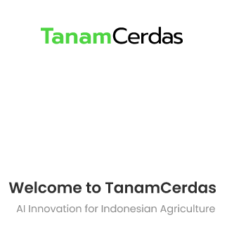
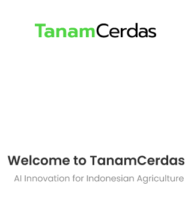
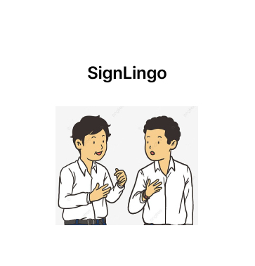

I am a Computer Science student at BINUS University with a strong focus on cybersecurity, specializing in penetration testing,
digital forensics, and secure programming. I am competent in static analysis for mobile penetration testing, information gathering,
and have foundational skills in basic computer networks. Additionally, I have experience in UI design and web/app development.
My past roles, including serving as Secretariat at Indopipe 2018, have strengthened my organizational and teamwork abilities.
I am passionate about applying my technical expertise to address the evolving challenges in cybersecurity
 

TanamCerdas is an app concept designed to help farmers by utilizing AI for plant health diagnosis and care recommendations.
This project is part of my learning journey in UI/UX design,
created using Figma as I explore the potential of integrating AI and IoT in agriculture.

SingLingo is a simple mobile app designed to help users learn sign language, focusing on the alphabet.
It includes a quiz and dictionary feature for interactive learning. The app was developed using Java,
and it was my first project utilizing GitHub for version control and collaboration.

This is my AR project designed to help primary school kids learn science in a fun and engaging way.
The vision was to create an interactive learning experience that keeps kids entertained while they explore educational content.
The AR was developed using Assemblr, with some assets created in Blender.